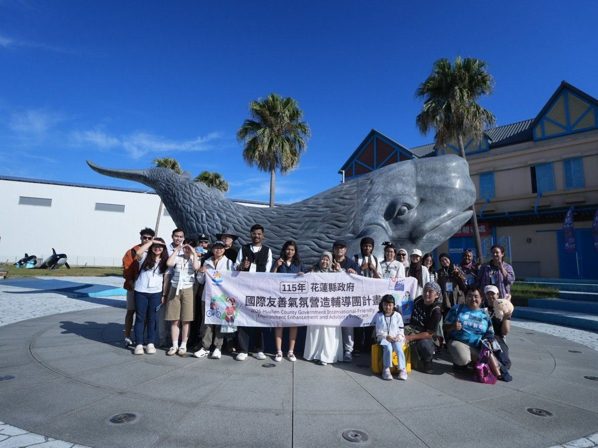
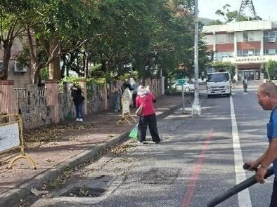

花蓮縣長號次抽籤 1魏嘉賢 2張峻 3游淑貞 4羅佩秦
花蓮縣選舉委員會27日辦理第20屆花蓮縣長候選人號次抽籤，抽籤結果：1號魏嘉賢、2號張峻、3號游淑貞、4號羅佩秦，選戰正式全面開跑。…
閱讀全文 →花蓮縣選舉委員會27日辦理第20屆花蓮縣長候選人號次抽籤，抽籤結果：1號魏嘉賢、2號張峻、3號游淑貞、4號羅佩秦，選戰正式全面開跑。…
閱讀全文 →可樂電子報小編/編輯 為協助各機關掌握《公益揭弊者保護法》施行細則及相關實務作業，法務 […]…
閱讀全文 →
可樂電子報小編/編輯 為促進海洋文化交流並深化保育意識，花蓮縣政府10月17日舉辦海洋 […]…
閱讀全文 →可樂電子報小編/編輯 花蓮市選務作業中心27日辦理第20屆市長、第23屆市民代表及里長 […]…
閱讀全文 →吉安鄉公所27日辦理第20屆鄉長、第23屆鄉民代表及村長候選人號次抽籤，5位鄉長候選人與31位代表、40位村長候選人號次全數底定，另有4個村同額競選免抽籤直接排1號，九合一選舉將於11月28日投票。…
閱讀全文 →可樂電子報小編/編輯 強烈颱風「薔琵」遠離，花蓮縣政府公佈因應 […]…
閱讀全文 →
可樂電子報小編/編輯 強烈颱風「薔琵」過境後，花蓮災後環境復原 […]…
閱讀全文 →可樂電子報小編/編輯 由花蓮縣政府原住民行政處打造的年度音樂盛事「2026花蓮韓流原聲 […]…
閱讀全文 →可樂電子報小編/編輯 在悠揚莊嚴的詩歌聲中，長期關懷脊髓損傷者 […]…
閱讀全文 →可樂電子報小編/編輯 為弘揚宗教信仰、傳遞社會溫暖，花蓮仁里萬 […]…
閱讀全文 →可樂電子報小編/編輯 縣鄉攜手協力推動藝文國際連結，「2026第六屆台灣花蓮國際文化藝 […]…
閱讀全文 →可樂電子報小編/編輯 由吉安鄉公所指導、花蓮縣靚魅力健康排舞協會主辦的「115年拉丁舞 […]…
閱讀全文 →可樂電子報小編/編輯 薔琵颱風挾帶強風豪雨過境花蓮，造成部分鄉鎮出現農損災情。吉安鄉長 […]…
閱讀全文 →可樂電子報小編/編輯 為促進親子互動、凝聚社區情感，花蓮縣吉安鄉青年會今（24）日在那 […]…
閱讀全文 →可樂電子報小編/編輯 強烈颱風「薔琵」持續發威，狂風豪雨造成花蓮縣吉安鄉多處路樹倒伏、 […]…
閱讀全文 →可樂電子報小編/編輯 受強烈颱風「薔琵」外圍環流與強風侵襲，花蓮縣吉安鄉陸續傳出農業災 […]…
閱讀全文 →可樂電子報小編/編輯 薔琵颱風逼近花蓮，秀林鄉公所於十月二十三日下午三時，針對和平村和 […]…
閱讀全文 →可樂電子報小編/編輯 受薔琵颱風及其外圍環流影響，花蓮山區道路易發生坍方、落石與路基受 […]…
閱讀全文 →可樂電子報小編/編輯 受薔琵颱風外圍環流帶來的強勁風勢影響，花 […]…
閱讀全文 →可樂電子報小編/編輯 強烈颱風「薔琵」持續逼近，外圍環流預估將為東台灣帶來強風豪雨。吉安鄉公所全面提高戒備，提 […]…
閱讀全文 →